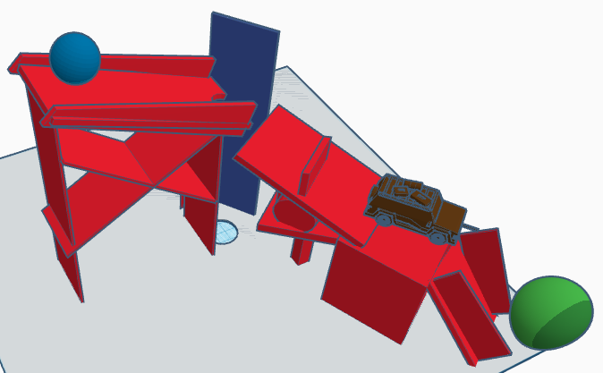
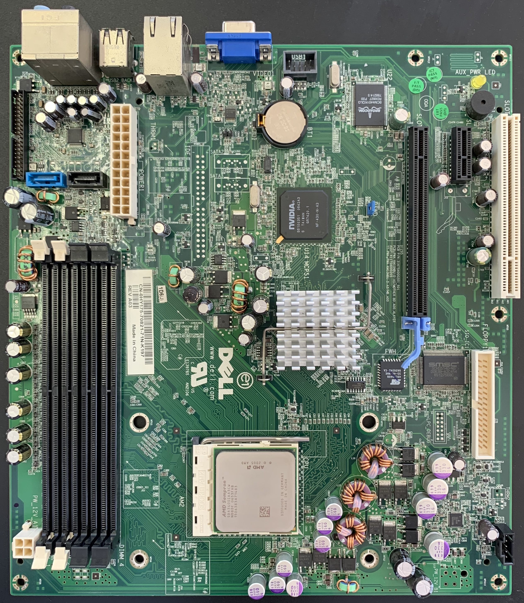

This week, we learned about how to be safe in an engineering
environment,what the engineering process looks like, and the basics of Rube Golberg machines.
Concerning safety, we learned about all kinds of protective gear,
like gloves and goggles, and how various tools are used.The engineering process,
another topic this week, consists of seven steps.
Asking a question, doing research, imagining a solution to the problem you want to solve, planning a design,
creating a prototype, testing it, and improving it based on the results. Rube Goldberg machines, another focus, are large, chain reactions made
to carry out simple tasks. We were given a project where we must make a Rube Goldberg machine that starts with a baseball,
and ends with popping a balloon. We made initial sketches of our design in our groups, and we will do more designing the following week.
We also began our websites, which is what you are reading right now.
Week 2: August 28th - September 1st
This week, we did more work on the design of our Rube Goldberg machines.
My group and I each drew sketches and then combined what we liked into one big sketch.
We then used an online program called Tinkercad to create a 3D model (to scale) of our project idea. It is
still a work in progress, but we should be able to finish it next week. We also learned about mechanical engineering, which is
one of the oldest and most broad disciplines of engineering. Mechanical engineering is present in so many different fields, like fluid mechanics,
thermodynamics, and structural analysis. It combines elements of math and physics, along with matrial science. We also did a challenge this week!
We had to use Tinkercad to create a home appliance, and we only had 40 minutes to do so. I created a bed, with a mattress,
a blanket, and a few pillows (see image). Lastly, we took a quiz about safety in engineering.
Week 3: September 5th - September 8th

This week, we finished our Rube Goldberg designs on Tinkercad. My group and I felt fairly confident about our design,
and we got to startbuilding! We began by cutting out pieces of cardboard with a boxcutter, and taping them together.
As of now, we have assembled our first ramp, and it stands up on its own. We believe that
our Rube Goldberg Machine will end up smaller
than our 3D model, but are confident that it will pop the balloon. Our machine will be tested in a week,
and the elements we still need to add are the baseball stopper wall, the lever, and the ramp for the car.
Additionally, we took a quiz about mechanical engineering and what it entails based on what we learned last week.
Week 4: September 11th - September 15th
This week, we spent all of our class periods building our Rube Goldberg machines. It was a process full of failure, making changes,
and solving problems. The elements left to build at the start of the week were the lever, the ball stopper, and the car's ramp. We began with
the stopper, which had a lot of problems at first. It didn't have enough support and was barely anchored to the rest of our machine. We fixed
this by adding a triangular structure to the bottom of the stopper and taping it to a base plate that supported the entire machine. For the lever,
we taped a flat piece of cardboard over a triangular prism which was mounted on a cube. Thus, the ball rolled down the ramp and landed on
the lever. After this, we encountered some more challenges. The lever simply pushed the back of the car into the air, and the car would stay still.
To solve this, we added a little piece of cardboard to push the car rather than flicking it upwards. We also rounded out the bottom of the car's
resting place. This made it so that when the lever pushed the car, the resting plate would slant downward, causing the car to begin rolling. Making the
ramp was pretty straightforward, but popping the balloon with the needle (taped to the car) was surprisingly difficult. The needle kept missing the balloon or got pushed
back by the balloon. This happened during our test in front of Ms. Petrosian. The machine worked perfectly, but at the end, the needle missed the balloon,
because it was pointed too high. We used some tape to lower the needle and tested it again. And...it worked!!! This project was very fun, and I look forward
to more projects throughout the rest of the year. Below is a video of our project in action.
Week 5: September 18th - September 22nd

This week, we did two challenges. The first was a building
challenge. We were given one sheet of paper, tape, and scissors, and
had to make a flotation device to support weights (scrap metal). We selected a certain amount of weight for our flotation device,
and our goal was to have it stay supported for 5 minutes. Whoever lasted 5 minutes with the highest weight would win. For my design,
I made a small square boat/container, about 3 inches on each side. It had 1 inch walls on each side, help together with tape. I chose
a very ambitious 97.2 grams of weight, and went outside to test it. I put my boat in the crate of water, and it stayed afloat
for... 12 seconds! It starting filling with water right away, and sunk very soon after. I learned, to my surprise,
that the best design was one with a lot of surface area. Even an unfolded sheet of paper would
make for a better flotation devide than mine. The second challenge
was a designing challenge. We had to design a paper letter E, as best we could. Then, our design was given to another student to
measure and cut out exactly as written. If the design was missing measurements or didn't add up, it would show in the paper E. We
then had to grade the design we recieved out of 10. This challenge's purpose was to show the importance being meticulous and thorough with
our measurements. We also learned about computer engineering. It is a cross between eletrical engineering and computer science, and has
many applications today. Consumer electronics, robots, medical devices, and some military devices all involve computer engineering. We also got
an overview of the various parts inside of a computer (see image).
Week 6: September 25th - September 29th
This week, we learned more about computer engineering. We discussed the various parts that make
up a computer and what they do. The main circuitry is all connected by the motherboard, which is a big, flat board. On the motherboard, you will find
parts like the CPU, the GPU, and the RAM. The CPU (central processing unit) does all of the computing for the computer.
It often heats up from all this work, and thus has a heat sink near it. The GPU (graphical processing unit) does
graphical mathematics and processes
images so the CPU has less work to do. The RAM (Random Access Memory) stores short-term memory/data.
Long term storage is done with SSDs (Solid State Drives)
and HDDs (Hard Disk Drives). Peripherals are input and output mechanisms such as keyboards, mice, USB drives, (Input), audio, and video (Output).
Data is stored in units on a large hierarchy.
There are 8 bits in a bite, 1024 bytes in a Kilobyte, 1024 Kilobytes in a Megabyte,
and so on, with Gigabytes, Terabytes, Petabytes, etc. We also dissected a computer, but unfortunately, I was absent for this.
Week 7: October 2nd - October 6th
This week, we learned about bioengineering. It combines biology and various disciplines of engineering to create various products. These can include
medical devices, biofuels, and prosthetics. Our project this week focused on prosthetics. We had to use cardboard, string, and tape to
make a prosthetic hand that could pick up a water bottle. We made a 5 fingered hand (one thumb) with 3 joints per finger. Strings lined each one,
so when we pulled on all of the strings, the hand would close. All in all, it worked! However, I feel as if there was a lot of room for improvement.
It didn't have an extremely strong grip, nor was it easy to grab all of the strings at once. We also did a challenge this week. We had to design
a prosthetic for an animal on Tinkercad. I chose a horse and designed a prosthetic leg, that consisted of a hoof, a lower leg segment, a rotatable knee,
and an upper leg segment.
Week 8: October 9th - October 13th
This week, we began learning about aerospace engineering, which focuses on the design, manufacturing, and science of aircraft and spacecraft.
The two main branches are aeronautical engineering, which centers on crafts that stay within Earth's atmosphere, and astronautical engineering,
which centers on crafts that travel to outer space. Aircraft and rockets have four main forces acting open them: Thrust (goes in the direction of motion, comes from engine),
Weight (goes towards the center of the earth, is the force of gravity), Lift (goes at a right angle to the direction of motion through the air), and Drag
(goes against thrust, is like friction in the air). Some of the design discipline involved include aerodynamics, thermodynamics (temperature varies greatly in the atmosphere), and acoustics.
We will make a flying machine using a soda bottle next week, and had to make a design on Tinkercad. Mine incluced two side wings (attached to the bottle from two different points),
an upper wing, and a frontal cone.
Week 9: October 16th - October 20th
This week, we focused mostly on our bottle rockets. My partner (Liam) and I made a build that incorporated elements of both of our designs.
It featured two large, airplane style wings (one on each side), with small flaps on the edges. When we glued them on however,
they fell over, so we used pencils to support them. We also added a cardboard nose the day of testing, by using four triangles to
make a pyramid. We also had issues with the pencil on the bottom, used help the rocket slide off of its launch ramp. It was very difficult to glue
it straightly, and we kept getting glue on the pencil. However, we finally worked it out, and put the pencil on with no glue spread.
If we had more time, we would have added a second pair of wings (smaller) towards the back of the rocket. When we went to test, we added a full cup of water,
aimed it at about a 45 degree angle upward, and cranked the pressure up to
the maximum (80+ PSI). When we let it go, it shot up into the air, and then began to spin rapidly as it fell to the ground. It
landed pretty much in the middle of where all the other rockets had landed. If we could retest it, we would have angled it more forward,
and turned down the pressure just a bit.
Week 10: October 23rd - October 26th
This week, we learned about environmental engineering, which is the application of engineering and science to better the land, water, and air that we humans and other organisms need,
and to remediate pollution sites. Environmental engineers deal with various issues such as water purification, disposing of hazardous substances, and combatting air, light, and noise pollution.
Environmental science often influences policies and laws, such as the Paris Agreement, which strives to reduce global temperature by 1 or 2 degrees celsius over the next years.
We also did a challenge where we had to make a water filter using a plastic bottle. We were given pebbles, cotton balls, sand, and rocks, and had to choose the order in which we would place them in the bottle.
My partner and I put cotton balls at the bottom (where the filtered water exits the bottle), followed by sand, pebbles, and then rocks on top. We figured that it would be better to filter out the largest debris first,
then move on to the finer particles. Many other groups did this design as well. Our design worked fairly well, as it filtered out any rocks, wood pieces, and even small dirt granules from the dirty water we poured into the filter.
Even though there were no large chunks in our water, it was still a light yellow, which was the cleanest that we could get it. Another group got their water completely clear by cleaning out the filter before passing their water through it again.
This is what we would do if we could do it over. To the right is a picture of our filtration system and the water left over.
Week 11: October 30th - November 3rd
This week, we began our electrical engineering unit. Electrical engineering is the study, design, and use of appliances and equipment that use any form of electricity.
We learned about the various measurements involved in circuits, which are voltage (volts), current (amps), resistance (ohms), and power (watts). We also learned about the difference between
a series circuit and a parallel circuit. A series circuit is when the electricity flows in one big cycle, from power source to ground. Additionally, we learned about diodes. We did s
ome math for the first time this year with Ohm's law (V=IR), where V is v
oltage, I is current, and R is resistance. They only let current flow in one direction. An LED (light emitting diode) is an example. A parallel circuit is when the electricity flows in many different loops that each are grounded separately.
We then made circuits on a virtual breadboard using Tinkercad. A breadboard
is a convenient platform with various wire ports to easily make circuits and connec
t the different parts. We made a simple, one light circuit, a series circuit, and a parrallel circuit (see image). We will
build real circuits next week.
Week 12: November 6th - November 10th
This week, we began building actual circuits using a breadboard. We were given an Arduino to power our circuit, along with a resistors, LEDs, and wires.
We had to make a one-light circuit, a series circuit (3 LEDs), and a parallel circuit (3 LEDs). My partner and I were able to do this successfully! After, we had to program our
Arduino to make the lights blink in a certain pattern. We plugged wires from into pins (they provide power) in our Arduino and connected them to our breadboard. We learned code commands that could turn a LED on and off, and could make the circuit delay before doing the next command. While our code and circuit were correct, our lights still didn't light up, and we were very confused.
Here is a picture of our parallel circuit.
Week 13: November 13th - November 17th
This week, we began by continuing with our arduino circuits. We learned that we had to download the app for the circuit to respond to the code, and after doing this,
the circuits worked! We made 4 different blinking LED circuits, one of which is shown. We then learned about business in engineering. A business engineer must know a lot about both business
and technology, and be able to work with both commercial and technical teams. Some examples of the various fields a business engineer might pursue are project management, finance & economics, marketing,
and law & ethics. A business engineer must know how to effectively manage a team and their goals, and sprints along with task-based approcahes are used to do this. Our project is to make a Shark Tank like pitch of a new
product. Our group chose a spoon that heats up food, and will work out the details in the following class week.
Week 14: November 27th - December 1st
I was absent for most of this week. However, my group began working on our Shark Tank presentation, and they filled me in when I got back. We did a deep dive into our Thermo-Spoon product.
We spoke about our target audience, which is anyone who eats soup or drinks hot beverages, along with our sales (made up, of course), which were $140,000 in the last year. We included information about our cost to manufacture (75 cents), along with the price at
which we sell it ($1.75), and we then calculated our profic margins (57.4%). Overall, people liked our idea, as it would be helpful in keeping food heated, and we included an abundance of information, but there were a couple of flaws in our actual application. For example, 75 cents seemed to be
too cheap to manufacture something with a heating element, and we weren't fully sure on whether the spoon would self heat or be put in the microwave.
I was only present for four of the pitches (including ours), so I didn't have a large sample size. But, I really enjoyed the presentation about a wireless measuring device. It was not only a useful-sounding product,
but the presentation provided all of the necessary information along with a detailed digital rendering of what their product would look like. Some sample slides from our presentation are pictured below.
Week 15: December 1st- December 20th
What was the weight of your bridge?Our bridge weighed 46 grams.
What was the weight held by your bridge?Our bridge held 2035 grams of water.
What was the ratio of weight of bridge to weight held?The ratio of bridge weight to weight held was 1:44, meaning that our bridge held 44 times its own weight.
What was the heaviest part of your bridge? What contributed most to the weight?Our bridge was weighted fairly evenly. The only areas that may have been a little heavier were the points on the base about 4 inches in from the edges. We reinforced the pasta here, as we were going to hang our bucket from these two points.
Where did the design of your bridge come from? Inspiration? Research?The research we did showed that trusses were an effective way to make a stable bridge. We also realized (from building our first bridge) that a shorter bridge is sturdier than a taller bridge, and that a triangular shape is more stable than a square shape. This is how we came up with our second bridge design.
Did the design work as intended? Better? Worse?
What was the point of failure of your bridge? Was that the expected weakest point?
What can you do to improve your bridge? What can prolong points of failure?

 This week, we did more work on the design of our Rube
This week, we did more work on the design of our Rube